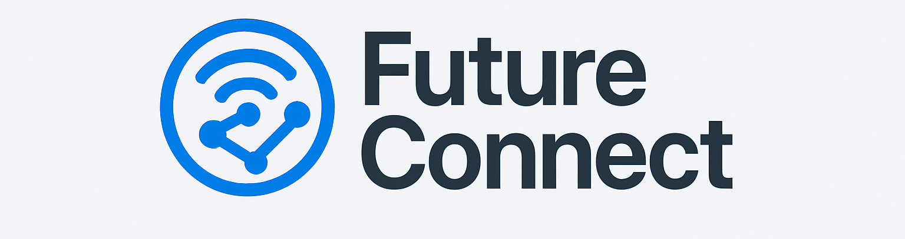

Conectando Talentos para o Futuro do Trabalho
Explore a nova geração de profissionais com foco em competências, propósito e tecnologia. Clique em um perfil para visualizar todos os detalhes.
Carregando Perfis...
Quiz: Prepare-se para o Futuro!
Clique em "Iniciar Quiz" para começar o teste sobre tendências do mercado de trabalho.